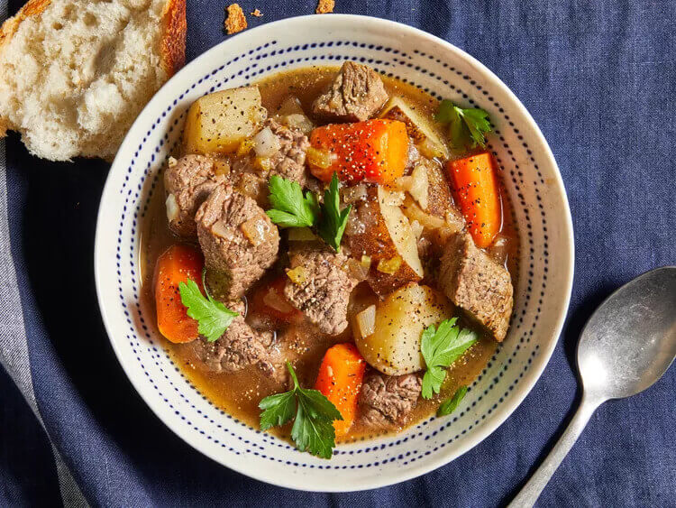

Slow Cooker Beef Stew
This slow cooker beef stew is the perfect low maintenance meal for chilly fall and winter nights. Full of cozy flavor and hearty ingredients, this beef stew recipe will warm you up from the inside out.

- 2 pounds beef stew meat, cut into 1-inch pieces
- ¼ cup all-purpose flour
- ½ teaspoon salt
- ½ teaspoon ground black pepper
- 1 ½ cups beef broth
- 4 medium carrots, sliced
- 3 medium potatoes, diced
- 1 medium onion, chopped
- 1 stalk celery, chopped
- 1 teaspoon Worcestershire sauce
- 1 teaspoon ground paprika
- 1 clove garlic, minced
- 1 large bay leaf
- Gather ingredients.
- Place meat in slow cooker.
- Mix flour, salt, and pepper together in a small bowl. Pour over meat, and stir until meat is coated.
- Add beef broth, carrots, potatoes, onion, celery, Worcestershire sauce, paprika, garlic, and bay leave; stir to combine.
- Cover, and cook until beef is tender enough to cut with a spoon, on Low for 8 to 12 hours, or on High for 4 to 6 hours.
- Serve hot and enjoy!
This original recipe submission called for slow cooking on Low for 10 to 12 hours. When making the video for this recipe, our food stylists found a cook time of 8 hours on Low (or 4 hours on High) was sufficient. Please stir and check doneness along the way to be sure your meat is cooked properly.